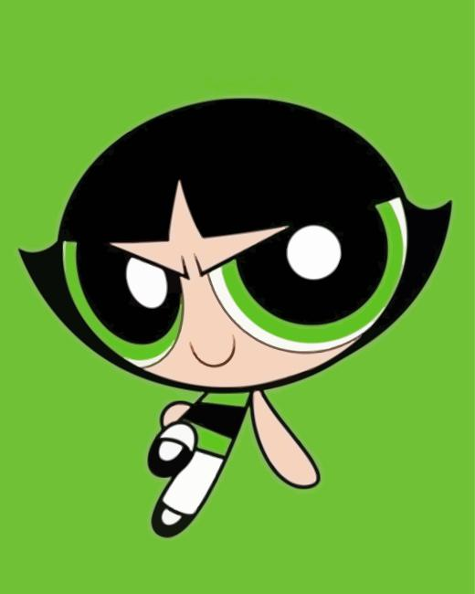

Cut thick enough to survive.
Aim for 10 to 12 mm batons. Thin fries cook quickly, but thicker fries give you a fluffy center worth protecting.
Potato. Reconsidered.

A crunchy, visual field guide for turning potatoes into crisp, golden fries with a clean ingredient list and a repeatable process.
Why this exists
This page is structured like a landing page first and a blog second: it teaches the ingredients, explains the fry science, and finishes with a recipe card readers can actually follow.
The method
Aim for 10 to 12 mm batons. Thin fries cook quickly, but thicker fries give you a fluffy center worth protecting.
Removing surface starch keeps fries from sticking and helps the crust form cleanly during the second fry.
Water drops lower the oil temperature and rough up the surface. Towels do more for crispness than extra seasoning does.
Cook once at 150°C until pale and tender. Rest. Finish at 175°C until the edges sound crisp against the basket.
Ingredient bench

High starch, low moisture, crisp exterior, fluffy center.
Peanut, canola, or rice bran oil with a high smoke point.
Small crystals cling while the fries are still hot.
A short soak can help fries hold shape before the first fry.
Recipe card

Keep batches small. Crowding drops heat, and heat is the difference between crisp fries and soft potatoes.
Journal
Steam trapped under the crust softens it. Use a rack, not a bowl.
Salt needs surface oil to stick, so season as soon as fries leave the basket.
Chilling after the first fry firms the surface before the final blast.
Team

Potato testing, recipe notes, and the first round of taste checks.

Design / storyVisual direction, page structure, and the editorial style of the site.
Frontend build, polish passes, and keeping the site ready to share.